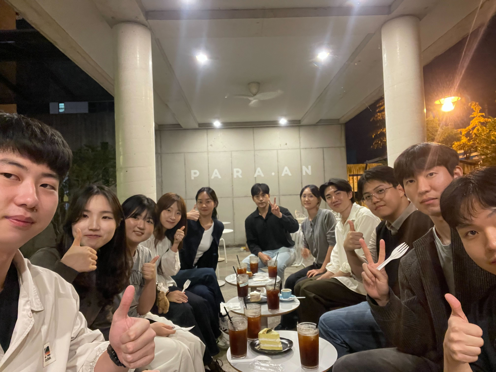
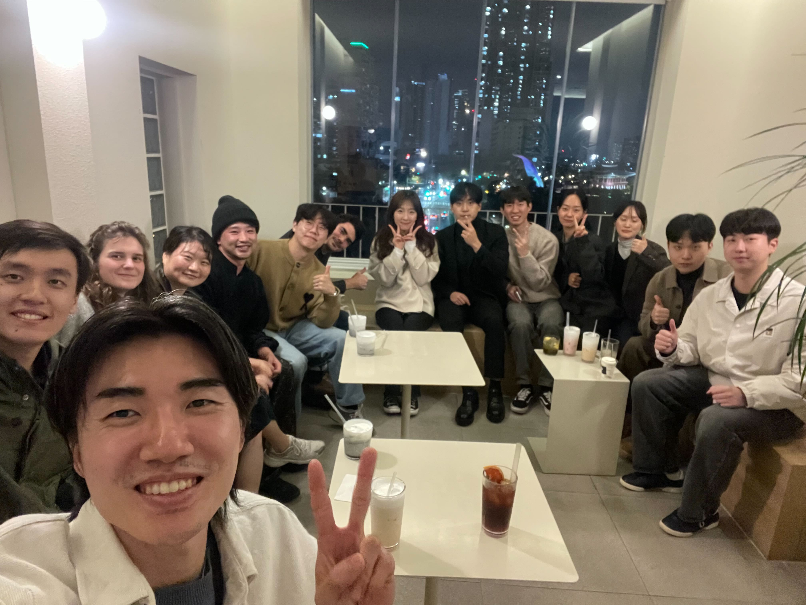
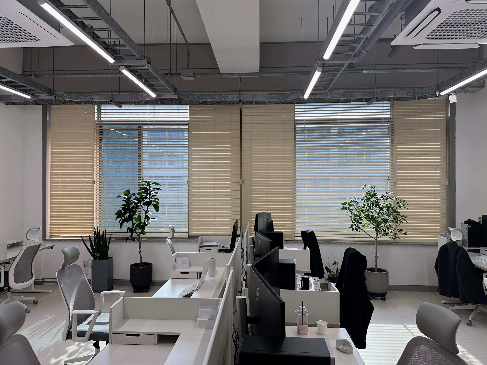
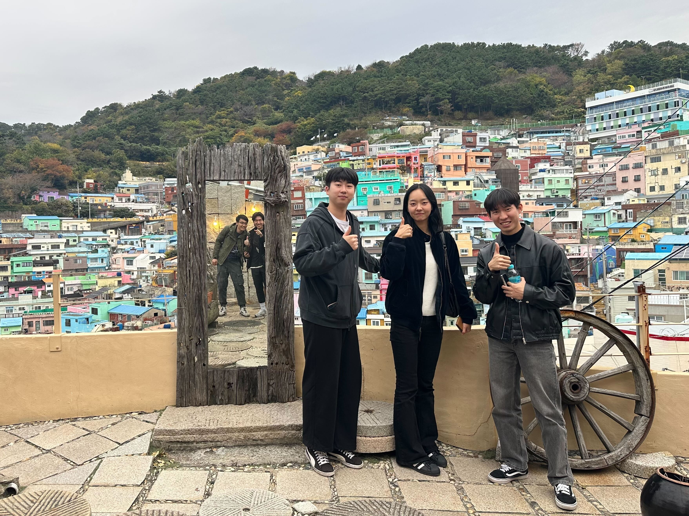
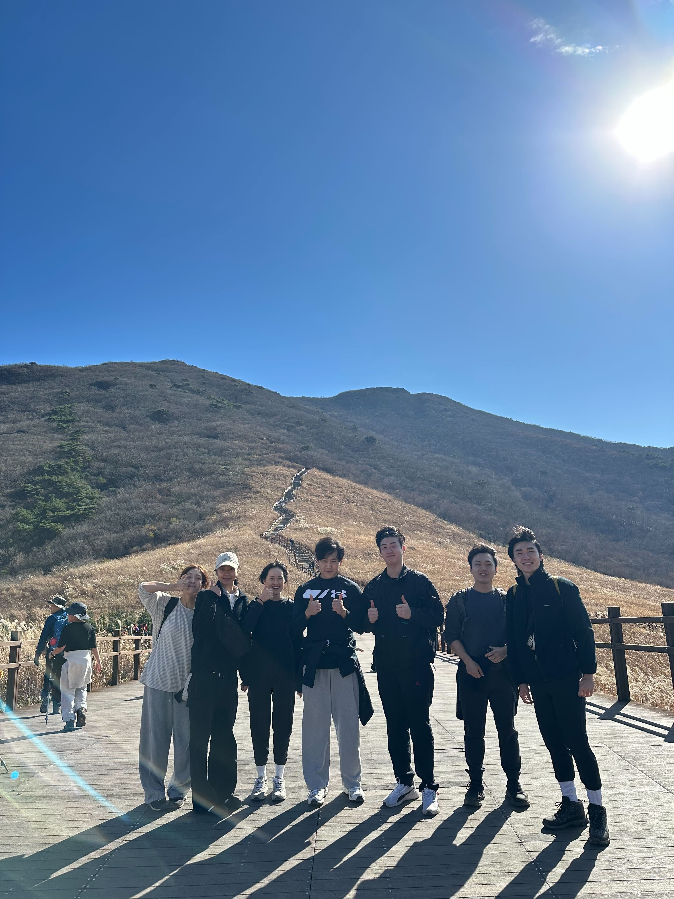
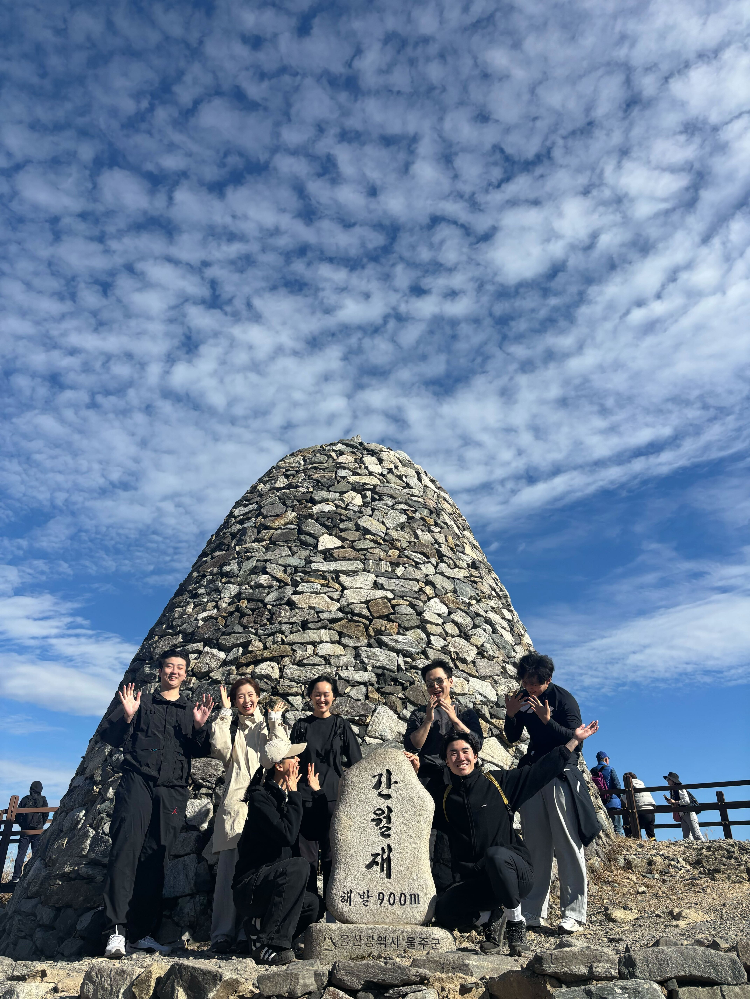
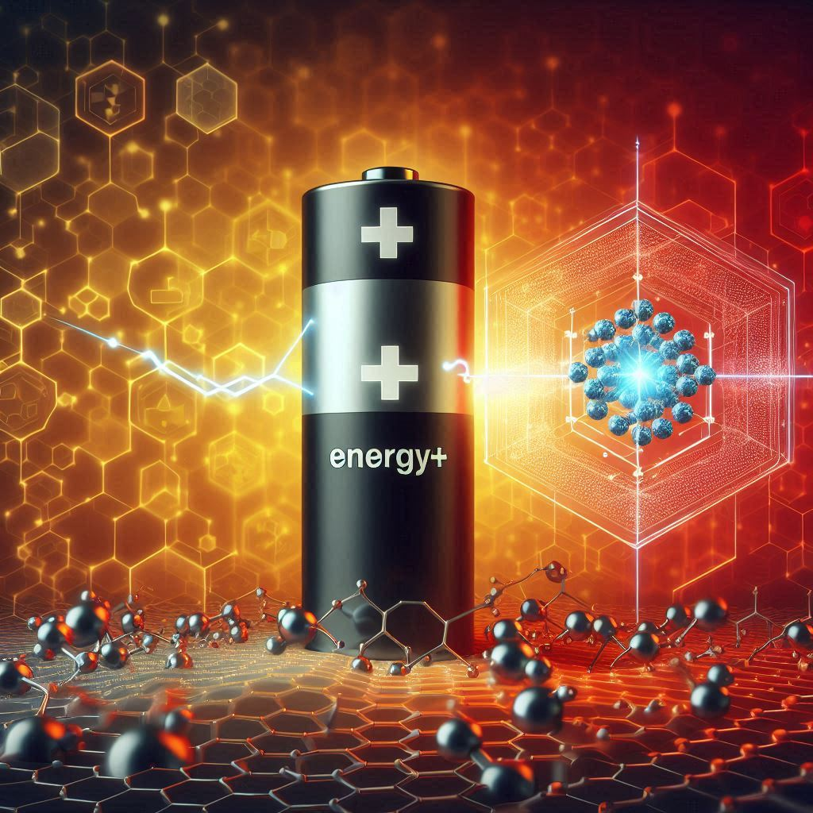
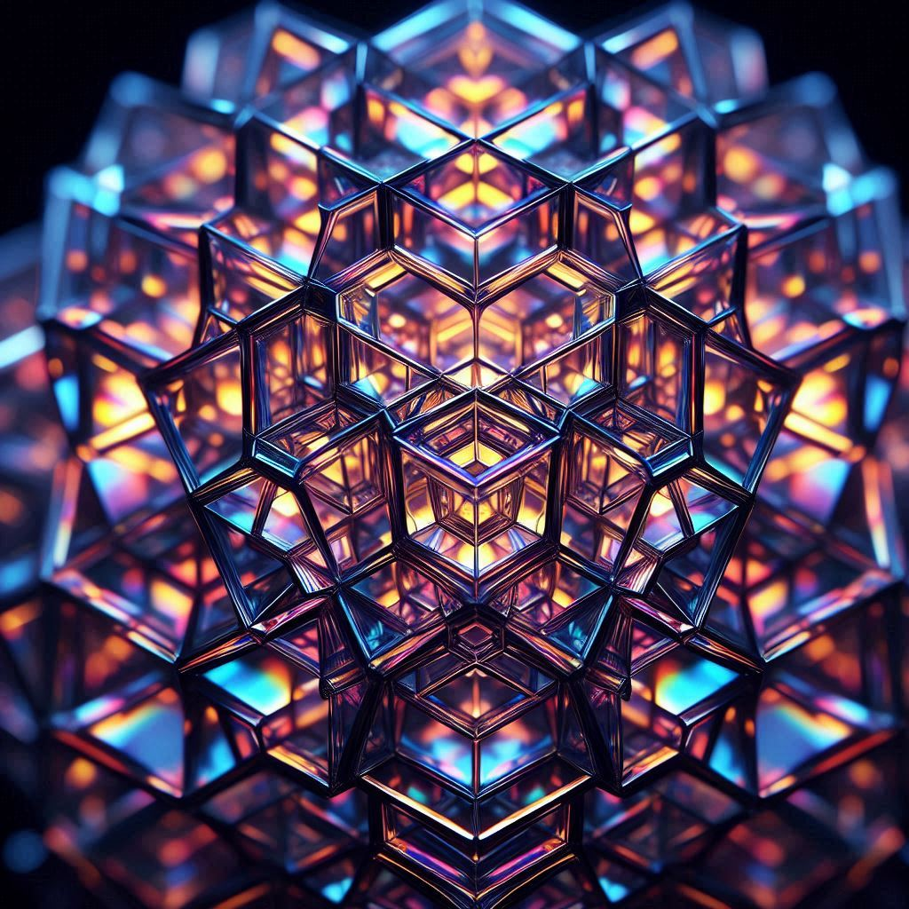
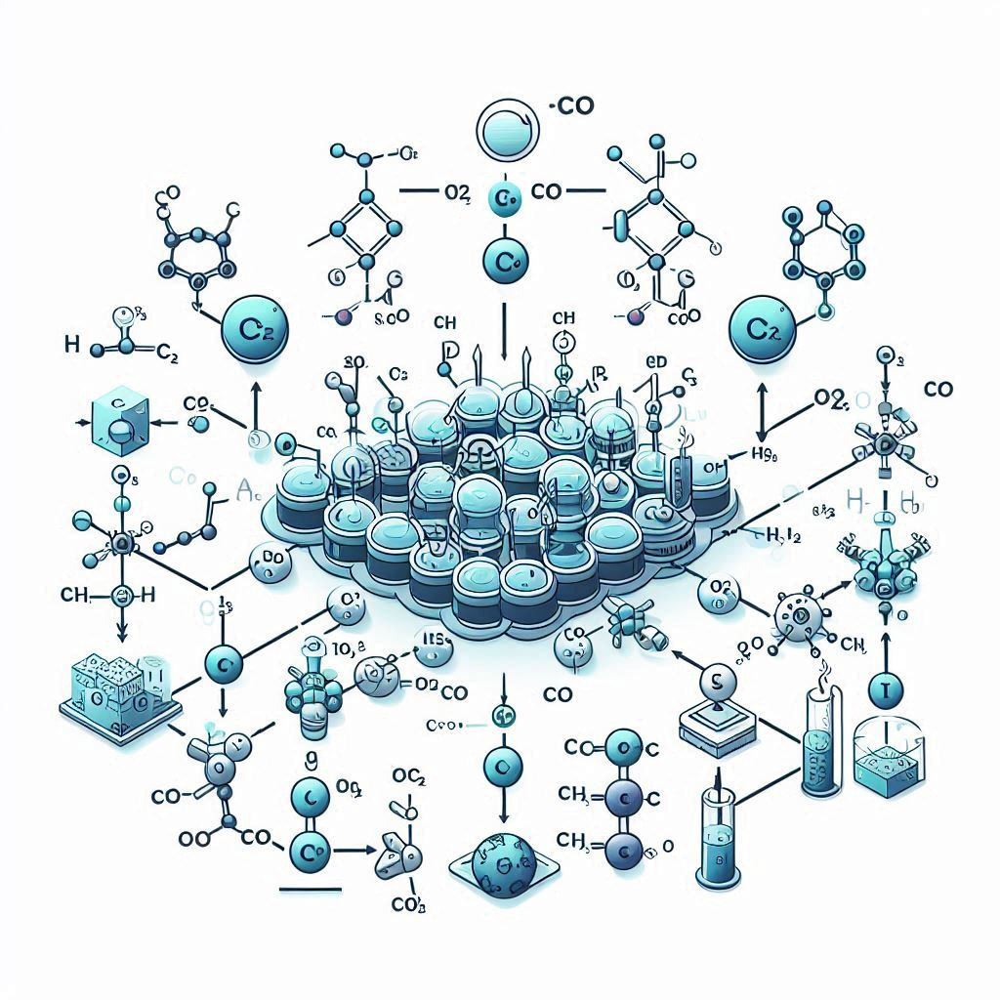
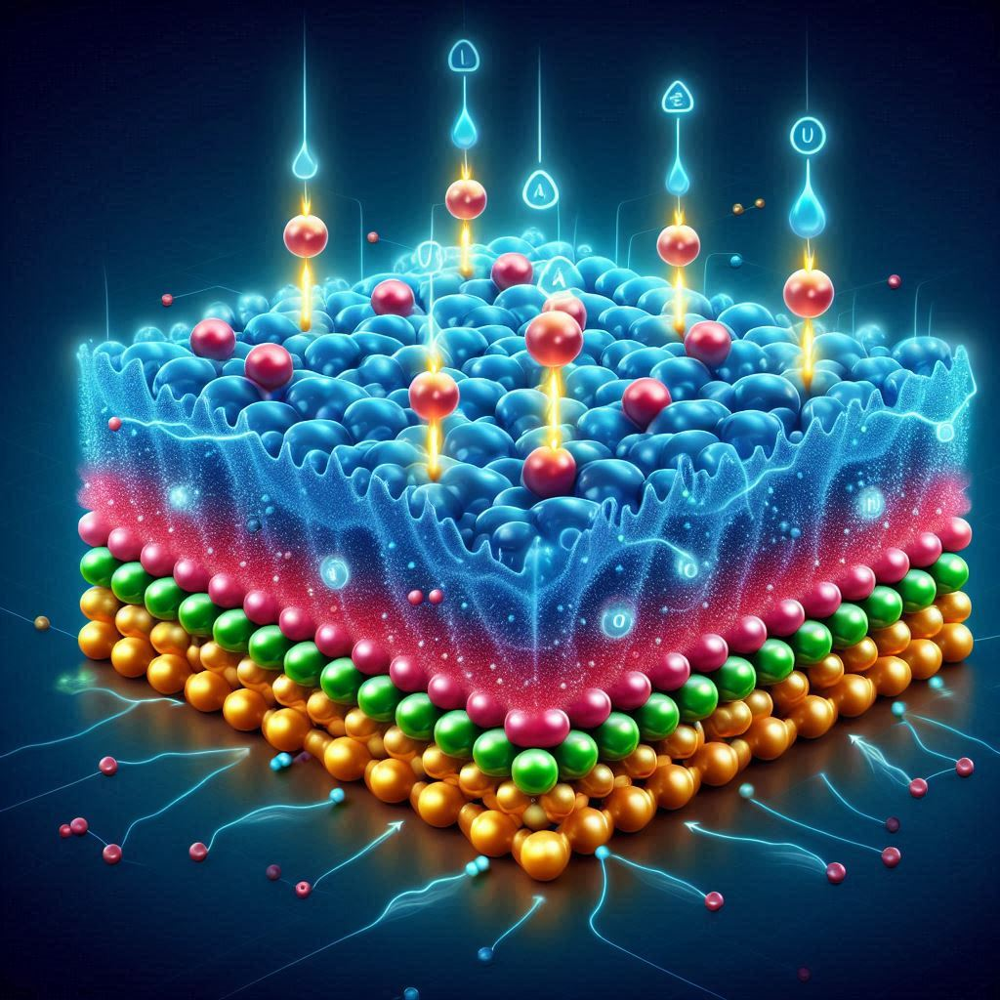

We are dedicated to exploring the frontiers of technology and science. Our mission is to innovate and solve real-world problems through theoretical approaches.










Our Vision
To be a leading research group recognized globally for our high-impact discoveries and collaborative environment.
Core Values
Innovation, Integrity, Collaboration, and Open Science are the pillars of our daily work and progress.
Join Us
We are always looking for talented and passionate candidates to join THEMMES group. Check the Team page for openings!
Research Areas
THEMMES group has been investigating various (photo-)electrochemical systems. We have built up multiscale simulation skills based on a strong background on computational chemistry. In the era of automisation, the artificial intelligence is actively employed to accelerate our investigation. Furthermore, those theoretical findings are to be validated by experimental measurements. We thus actively collaborate with many experimental groups in the world.
TEAM-reaX
Understanding reaction dynamics and kinetics over the (photo-)electrochemical system is our main goal.
Reaction dynamics over (photo-)electrochemical systems
Multiscale simulation is a core skill in the THEMMES group. We are actively investigating various topics relevant to energy materials and systems via multiscale simulation. Simulation scale depends on the system we are interested in. We might study an origin in microscopic scale using quantum mechanics simulation technique, e.g., DFT simulation. It would be interesting to understand the phenomena in molecular scale with the help of statistical level simulation, e.g., MD simulation based on many different levels of force-field. Furthermore, it is to be observed in mesoscale simulation to match experimental findings taking advantage of its approximation, e.g., KMC or microkinetic modelling. In more large scale, we are able to utilise continuum level simulation, with the help of various user-friendly programs, e.g., COMSOL.
Artificial Intelligence
Artificial intelligence is a general approach whilst any other area in our daily life. The THEMMES group is also interested in accelerating our investigation with this technology, e.g., using machine learning force field to construct a potential energy surface or discovering new functional materials via diverse machine learning models based on pre-built or novel database. We are happy to use various techniques from classical machine learning to deep learning. We are not only trying to take advantage of pre-built models and database, but willing to develop new models and construct database. Currently, we are focusing on utilising many databases from simulation. It might lead us to efficiently investigate materials chemistry.
Experimental Validation
Basically, the THEMMES group is theoretical energy materials modelling group, so our main focus is to be an expert to conduct multiscale simulation and understand various energy materials and systems. However, it is always a rule of thumb that the model match experimental findings. It motivates us to do experimental validation. We actively collaborate with experimental groups to get this in many research themes. We are also trying to develop our own experimental setups to corroborate our findings efficiently.